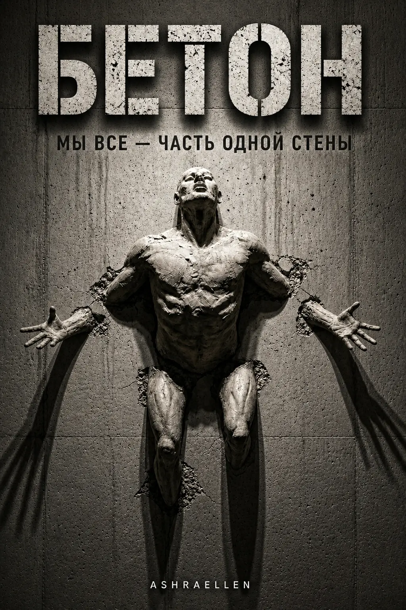

БЕТОН
Первый том трилогии «МОНОЛИТ».
Дело
Том I

Бетон начинается не со стены. Он начинается с привычки называть тюрьму стабильностью.
ДЕЛО № 2026-001B. Индекс: 6666548A. СТАТУС: Совершенно секретно.
Описание
о книге
БЕТОН — философская антиутопия, психологический триллер и социальная фантастика о мире, где стабильность стала новой формой тюрьмы. Это первый том трилогии «МОНОЛИТ» и первый этап верификации реальности.
Антон — не просто сотрудник. Он — инструмент Системы, предназначенный для калибровки человеческих смыслов. Его работа — выявлять и сглаживать «шум»: слишком яркие воспоминания, слишком острые чувства, слишком живые вопросы, слишком опасные проявления памяти и внутреннего сопротивления.
В этом мире всё, что нарушает монолитность структуры, должно быть отредактировано. Страх, любовь, боль, выбор, прошлое, вина, гордость, сомнение — всё может быть исправлено, переписано или удалено ради стабильности. До тех пор, пока сама Система не даст сбой.
Мы все — часть одной стены. Мы привыкли к её холоду и прочности. Но что делать, если вы начали слышать гул там, где должна быть тишина?
БЕТОН — это антиутопический роман-стенограмма, изъятый из закрытых архивов Департамента Смыслов, Верхний Сектор. Это книга на границе социальной фантастики, киберпанка, философской прозы и психологического триллера: история о контроле сознания, редактировании памяти, распаде реальности и человеке, который обнаружил первую трещину в идеально построенном мире.
Этот текст — протокол идентификации процесса, который невозможно остановить. Это история о запахе, который не прошёл проверку, о памяти, которая отказалась стираться, и о человеке, который понял: самая прочная тюрьма — это та, в которой тебе слишком удобно.
«Бетон боится только тех, кто перестал считать себя его частью.»
Издание выпущено в условиях экстерриториальности для сохранения целостности Сигнала.